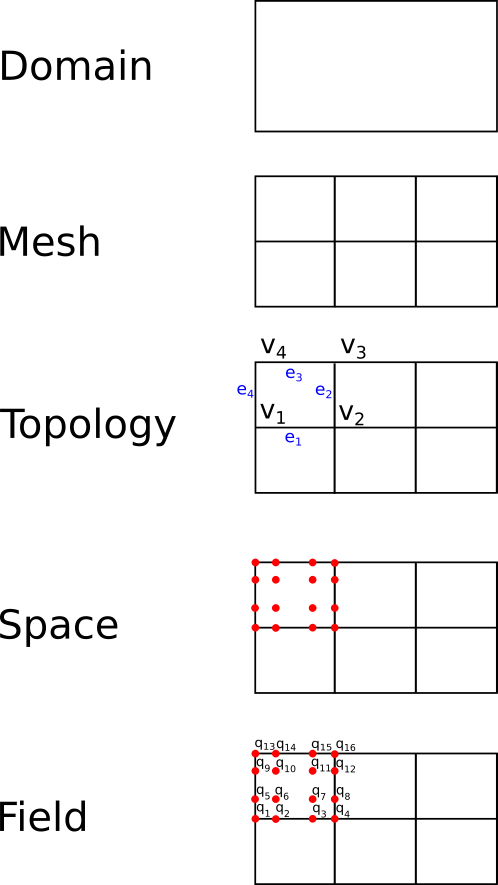

Concepts and design
ClimaCore.jl is the layer of the CliMA Earth system model that turns a continuous domain into discrete fields and differential operators. It is agnostic about the medium, whether air, water, or soil: ClimaAtmos.jl and ClimaLand.jl write their governing equations in ClimaCore's operators and let ClimaCore evaluate them on the chosen grid and hardware [2, 4]. ClimaCore grew out of ClimateMachine, CliMA's first atmosphere code, whose discontinuous-Galerkin large-eddy simulations on GPUs and CPUs [3] set the requirements of portability and of a single code from the boundary layer to the globe. This page describes the objects a model is assembled from, the boundaries between ClimaCore and its neighbors, and the range of configurations the same code serves.
The object hierarchy
A model is built from the bottom up, each object wrapping the one below it.
| Object | Module | What it fixes |
|---|---|---|
| Domain | Domains | The continuous region and its boundary names: an interval, a rectangle, or the sphere. |
| Mesh | Meshes | The partition of the domain into elements: interval meshes with a stretching rule, rectilinear planes, the equiangular cubed sphere [5, 6]. |
| Topology | Topologies | Which elements are neighbors, and which process owns which element under MPI. |
| Quadrature | Quadratures | The nodes inside each element: Gauss–Lobatto–Legendre (GLL{Nq}, nodes on element boundaries) or Gauss–Legendre (GL{Nq}). |
| Grid | Grids | Topology plus quadrature plus the geometry at every node (coordinates, metric terms, Jacobian). Spectral-element grids also carry the discretization, Grids.CG() or Grids.DG(). |
| Space | Spaces | A grid plus, in the vertical, a staggering: cell centers or cell faces. |
| Field | Fields | Values of one type (a scalar, a vector, or a NamedTuple of them) at every node of a space. |
| Operator | Operators | A stencil or spectral derivative that acts on fields inside a broadcast expression. |

The first five layers on a rectangle of 3 × 2 elements: the domain is the region; the mesh divides it into elements; the topology names each element's vertices v₁…v₄ and edges e₁…e₄ and records which are shared with neighbors; the space places the quadrature nodes (red) inside each element; a field assigns a value q₁…q₁₆ to every node.
Fields.FieldVector collects fields on different spaces into one state vector with named components, which is what a time stepper advances. The API overview lists the modules; the introduction tutorial walks through the hierarchy with code.
Two horizontal discretizations, one vertical
Horizontal grids are spectral elements: within each element, a field is a polynomial of degree Nq - 1 in each reference direction, represented by its values at the Nq × Nq quadrature nodes. Two ways of coupling neighboring elements are available and are chosen per grid:
- Continuous Galerkin (CG),
Grids.CG(): node values on shared element boundaries are single-valued, and an element-local weak-form derivative is completed by direct stiffness summation (DSS), a weighted average over the copies of each boundary node. This is the discretization of the CliMA atmosphere [2]. - Discontinuous Galerkin (DG),
Grids.DG(): node values are element-local and may differ across a boundary, and element coupling enters through numerical fluxes evaluated on the two-sided face states [7].
Spectral elements: CG and DG develops both and states which operators each supports.
The vertical direction is a staggered finite-difference grid. The covariant vertical velocity component lives on cell faces; every other variable lives on cell centers. This is the Lorenz staggering, and it is chosen over an unstaggered or a high-order vertical discretization because a staggered grid suppresses the computational modes that every unstaggered vertical grid carries. Those modes do the most damage at large aspect ratios of the grid cells, with horizontal spacing exceeding vertical spacing by orders of magnitude, which is the normal situation in an atmosphere model [1]. Staggered vertical discretization gives the operators and the identities they satisfy.
A three-dimensional space is the product of a horizontal spectral-element grid and a vertical finite-difference grid: an extruded space. Horizontal operators act on each level; vertical operators act on each column. Terrain enters through a terrain-following vertical coordinate; Hybrid grids and generalized coordinates shows the resulting grid and its bases.
What lives elsewhere
ClimaCore stops at the spatial discretization and at the evaluation of operator expressions.
- Time integration is ClimaTimeSteppers.jl. A ClimaCore
FieldVectoris its state, and the model supplies explicit and implicit tendency functions. The atmosphere uses an additive Runge–Kutta scheme that treats vertical sound and gravity waves implicitly and everything else explicitly (horizontally explicit, vertically implicit) [8–10]; the implicit solve is column-local, so it needs no horizontal communication. ClimaCore'sMatrixFieldsmodule stores the banded column Jacobians that solve needs. - Device and process selection is ClimaComms.jl. A grid is constructed with a
ClimaCommsdevice and context; ClimaCore dispatches its kernels on the device type and its halo exchanges on the context type. Switching a run from CPU to GPU, or from one process to MPI, changes environment variables, not model code. - Thermodynamics, microphysics, radiation, and surface fluxes are separate CliMA packages that operate pointwise on field values. ClimaAtmos's ecosystem page maps the whole stack.
- Governing equations belong to the models. ClimaAtmos documents its equations and their semi-discrete form in terms of the operators defined here.
One code from a box to the globe
The operators are independent of the geometry of the domain. The same tendency function runs on
- a single column (
ColumnSpace), for single-column model tests; - an x–z slice (
SliceXZSpace), for two-dimensional mountain-wave and density-current cases; - a Cartesian box (
Box3DSpace) with periodic or wall boundaries, the configuration of large-eddy and cloud-resolving simulations [3]; - a plane (
RectangleXYSpace), for two-dimensional shallow-water flows; - the cubed sphere (
CubedSphereSpace,ExtrudedCubedSphereSpace), for global simulations, with the full deep-atmosphere geometry or the shallow-atmosphere approximation [11].
The CommonSpaces constructors build each of these in one call. Coordinates, metric terms, and vector bases differ between the box and the sphere; the operators read them from the grid's local geometry, so a model written for one runs on the other. The atmosphere paper's benchmark set spans a two-dimensional Schär mountain wave, a moist baroclinic wave with topography, and global scaling runs from 103 km to 6 km resolution on this basis [2]. Resolving meter-scale turbulence with the current horizontally explicit time stepping is limited by the horizontal acoustic Courant number; that limit is a property of the time integration, not of the spatial operators.